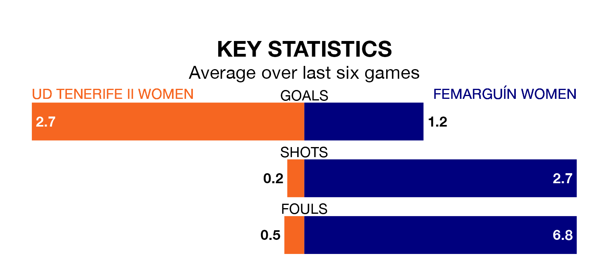

Two of the Segunda Federación Femenina's top sides face each other in Sunday's early kick-off, when fourth-placed UD Tenerife II Women host zero-placed Femarguín Women.
Tenerife II Women have picked up 12 wins and eight draws from 21 games so far this season, and sit 23 points above the visitors going into the 11am match.
Femarguín, meanwhile, have won five and drawn six, picking up 21 points.
With 38 goals in 21 games so far this season, Tenerife II Women are scoring more than average in the league with 1.8 goals per game. And they are conceding fewer than average, letting in 10 goals at a rate of 0.5 per game.
Femarguín, meanwhile, are below average scorers, with 1.0 goal per game, compared to a league average of 1.3. They have conceded 1.2 goals per game.
The home side are in fantastic form in the Segunda Federación Femenina, with five wins and a draw from their last six games.
With two wins and two draws over that period, the visitors' form is much worse – they have taken eight points from 18, compared to Tenerife II Women's 16.
Tenerife II Women's last match was on February 17, a 2-2 draw against Real Unión de Tenerife Women, with getting the goals for Tenerife II Women.
Femarguín drew 1-1 with Málaga Women last time out, also on February 17, with on the scoresheet.
Updated: 10:08 (UTC), 23/02/24